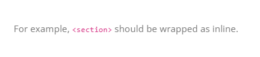

Porto-Typography Documentation
Overview
The Porto-Typography component allows you to create and style text sections with customizable classes, colors, sizes, and fonts. It supports various configurations to match your design needs.
For more details, check out the Porto-Typography repository on GitHub or the Porto documentation.
Usage Example
Edit
Properties
| Property | Description |
|---|---|
| Sections |
A list of text sections to display. Each section includes:
|
Views
Below are examples of the different styles and configurations available for the Porto-Typography component. Each style is customizable and can be adapted to your design needs.
Heading: Displays a styled heading with customizable typography.
Paragraph
Drop Caps: Applies a "drop caps" style to the text, where the first letter is enlarged for emphasis.
Code Inline: Highlights inline code snippets with a distinct style.
Basic Block: Displays a block of text with a clean and simple layout.
- Use the Class property to apply predefined styles like
drop-capsordrop-caps drop-caps-style-2. - Combine the Color and Size properties to create visually appealing typography.
- Ensure that the Text property is filled out for each section to display content.